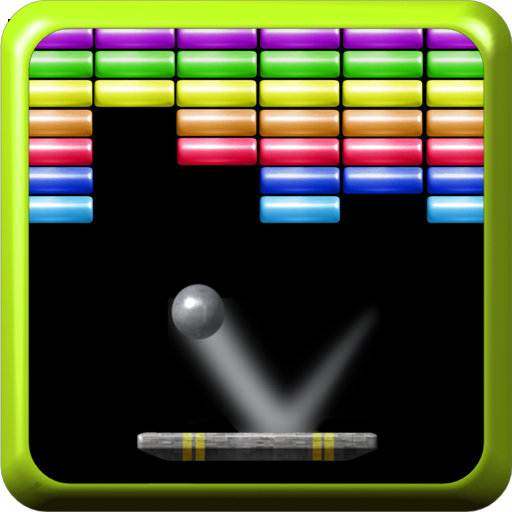
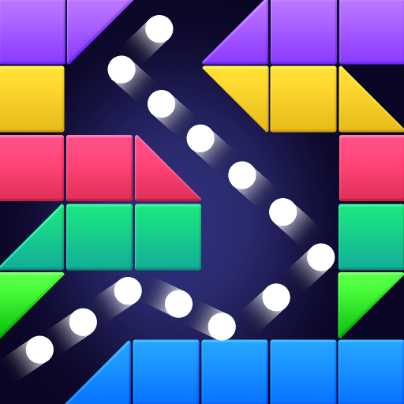
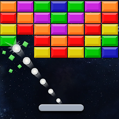

Nacido como un homenaje a los grandes "rompeladrillos" como Arkanoid o Breakout, hemos llevado la fórmula al siguiente nivel añadiendo mecánicas tácticas modernas, físicas alteradas y una batalla de jefe final (Boss Fight) sin precedentes.
Con la ayuda de una pala magnética, deberás hacer rebotar la esfera de energía para limpiar pantallas repletas de bloques. Para ello, contarás con Power-Ups tácticos como la "Bola de Fuego", la "Multibola" o la "Pala Pegajosa" para destrozar defensas metálicas y muros de TNT.
Nivel: Extremo. Tras superar los niveles de ladrillos biológicos regenerativos y agujeros negros gravitacionales, el jugador deberá enfrentarse a la Inteligencia Artificial "Sistema Némesis". Este Boss dispara misiles, invoca escudos, utiliza ataques de láser orbital y cuenta con un núcleo crítico.
Para lograr la fluidez deseada, hemos desarrollado un bucle de juego basado en hilos Thread. La física del rebote recalcula los vectores de velocidad matemática dx y dy en función de la coordenada de impacto, mientras que el motor gráfico gestiona efectos de partículas, distorsiones de niebla y colisiones dinámicas simultáneas a 60 FPS.